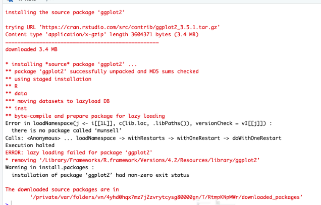

Common “errors”
If you still can’t install Quarto after following these tutorials, you should speak to NTU’s DT Support. This might be the case if you are using a device prodived to you by NTU with the NTU windows OS. These devices impose a lot of restrictions and I don’t reccomend using these devices if you can avoid them for daily activities. If you do not count with your own laptop, please speak to me and we’ll find a solution for you.
- Fail to render Quarto (*.qmd)
Some people reported they can’t render the “.qmd” file. This is likely due to fail in the code chunks. If anything is missing or work in your code, Quarto won’t render. This is important and helps you to keep you code functional and recproducible.
- This will give you line numbers easily
- Help you to find “where” the error is
- In this case, there is a package missing: “ggplot2”
- Fail to install R packages
Some people reported they can’t install a packages like “ggplot2”. First, whe you install “tidyverse”, ggplot comes together and you don’t need to install them again. Second, everytime this happens and it hapeens quite often for all of us, the most important thing is to look at the error log. It will give you a hint on how to solve. Copy and past in google and try to read the threads… yes I know, it is boring but you’ll need to do it form time to time and learn how to solve your issues on your own. You won’t have the support of a teacher forever.
See this exmample related to the above error

It says, there is no package called ‘numsell’ and this must be a dependency that is missing.
install.packages(“munsell”)
then
install.packages(“tidyverse”) # remember it comes with ggplot already
Copy and paste the error message in google and try to find a solution
- Make sure you have the latest versions of R and Rstudio
This is obvious but sometimes many of the above errors can be fixed by keeping R and RStudio updated.
- Fail to access Dropbox on NOW Page
This is likely due to enrollment issues and tend to be solved with time. Don’t worry, keep working on your files, make them online and if the error persists, contact NTU support as I have no power on NOW pages rather than editing the content on it.